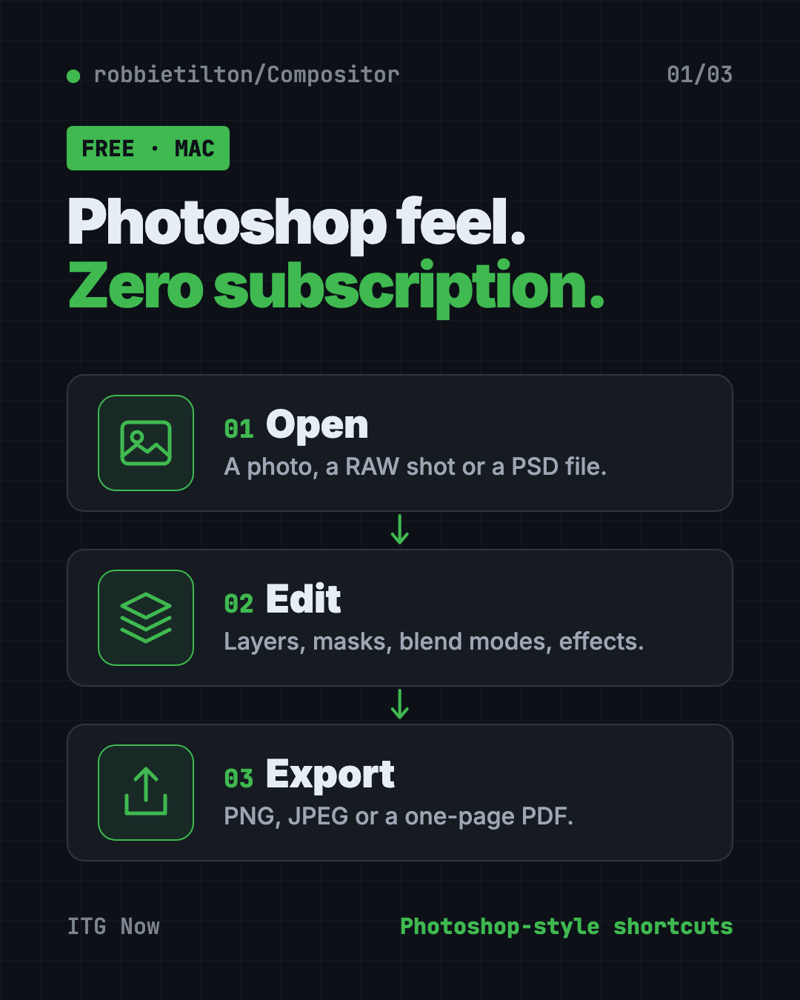
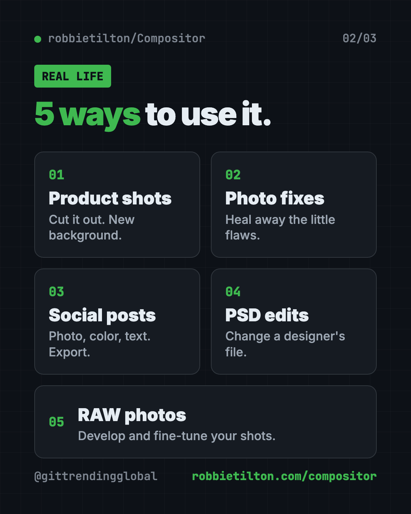
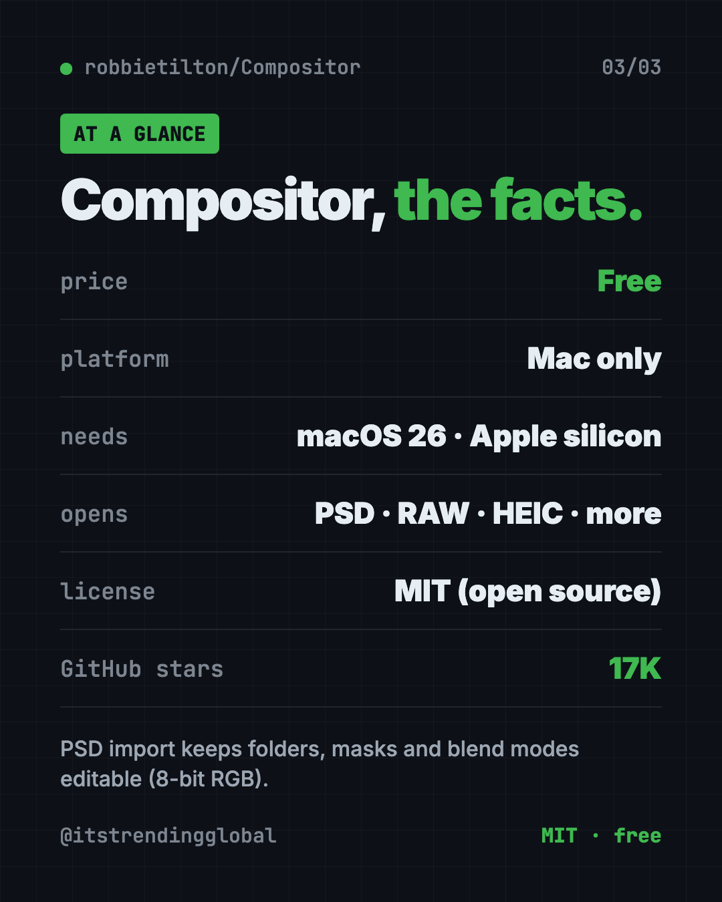

Compositor: Free Photoshop Alternative for Mac (2026 Guide)
- Free AI tools
- Published 2026-10-15
- 7 min read
- Updated 2026-10-16
- Stars 17K
- License MIT
- By the It's Trending Global team
Compositor is a free Photoshop alternative for Mac with layers, masks, blend modes and Photoshop-style shortcuts. It opens PSD files and has no subscription.
Compositor is a free Photoshop alternative for Mac with layers, masks, blend modes and the same keyboard shortcuts Photoshop users already know. There's no subscription, and the code is open for anyone to read.
This guide covers what it can do, real ways to use it, how to install it, and a prompt that lets an AI helper do the setup.
Key takeaways
- Free and open source under the MIT license. No monthly fee.
- Feels like Photoshop. Familiar tools, blend modes and shortcuts, so you stay in flow.
- Opens PSD files. Folders, masks and blend modes stay editable (8-bit RGB files).
- Mac only. It needs macOS 26 or later on an Apple silicon Mac.
- Made by one person, Robbie Tilton, and updated often. Version 1.5.3 came out on October 15, 2026.
What is Compositor?
Compositor is an image editor for the Mac. Its maker explains why he built it in one line: "Adobe Photoshop costs too much and tools like GIMP don't feel familiar enough."
So he made a full-featured editor that's "completely free and open source." It's built around compositing, which means stacking and blending several images into one final picture. Think of a product photo on a new background, or a poster made from five layers.
The project has about 17K stars on GitHub. Stars work like bookmarks, so a lot of people are keeping an eye on it.

What can Compositor do?
The feature list in the README is long. Here are the parts most people will use:
- Layers and folders, with opacity and Photoshop's full set of blend modes in the same order.
- Layer masks you can paint, fill, blur and feather. Plus clipping masks.
- Adjustment layers like Levels, Curves, Hue/Saturation, Exposure and Black & White. They change the look without touching your original pixels.
- Layer effects like drop shadow, stroke, glow and color overlay, editable any time.
- Smart selections. Select Subject, a magic wand, an object picker and lassos.
- Retouching tools. A spot healing brush, clone stamp and Content-Aware Fill, which can even extend a photo past its edges.
- A Camera Raw filter for light, color, curves and detail.
- Remove Background as a filter.
- A Type tool for editable text boxes.
- Search Commands. Press ⌘F and type the name of any tool or menu item to run it.
It imports JPEG, PNG, HEIC, TIFF, WebP, SVG, camera RAW, and Photoshop PSD and PSB files. It exports PNG, JPEG or a one-page PDF.
💡 Tip: Forgot where a menu item lives? Press ⌘F and type what you want, like "curves." Compositor finds it for you.
How to use Compositor (real examples)
- Make product photos pop. Cut out a product with Select Subject or Remove Background, then drop it onto a clean color.
- Fix family photos. Use the spot healing brush to remove a stray hair or a photobomber's elbow.
- Design social posts. Stack a photo, a color layer and some text, then export a crisp PNG.
- Open a designer's PSD. Edit the text or swap an image in a file someone sent you, without a Photoshop plan.
- Edit camera RAW shots. Develop your RAW photos, then fine-tune them with the Camera Raw filter.

Is this free Photoshop alternative for Mac really free?
Yes. The README says the goal was an editor that is "completely free and open source." It uses the MIT license, which lets anyone use, change and share it.
There's no paid tier mentioned. Because it's open source, you can even download the project and change features to fit how you work.
Can Compositor open Photoshop files?
Yes, with some limits. It imports PSD and PSB files in 8-bit RGB, but not CMYK (the color mode used for print).
Photoshop folders, masks, blend modes, simple shapes and plain horizontal text stay editable. Other vector shapes and vertical text become flat pixels. Compositor shows you a report of what will change before it opens the file.
⚠️ Heads up: If a print shop sent you a CMYK file, Compositor won't open it as-is. Ask for an RGB version.
Compositor at a glance
| Price | Free |
| Works offline | Yes, it's a regular Mac app |
| Platforms | Mac only (macOS 26+, Apple silicon) |
| License | MIT (open source) |
| Opens | JPEG, PNG, HEIC, TIFF, WebP, SVG, RAW, PSD, PSB |
| Exports | PNG, JPEG, one-page PDF |
| Latest version | 1.5.3 (October 15, 2026) |
| Best for | Mac users who know Photoshop and want to stop paying for it |
How to install Compositor on your Mac
These are the official steps from the README. You need a Mac with Apple silicon (M1 or newer) running macOS 26 or later.
- Download the app from robbietilton.com/compositor, or grab the latest release on the project's GitHub Releases page.
- Install it like any other Mac app.
- Launch it and open a photo.
Updates install automatically, and the app is signed and notarized by Apple. That means macOS can check it's safe.
Install with one command
If you use Homebrew (a free app installer for Mac), open Terminal. Copy and paste this:
brew install --cask robbietilton-compositor
⚠️ Heads up: Older Intel Macs and Macs on macOS 15 or earlier can't run Compositor. Open the Apple menu, then About This Mac, to check first.
Let Claude or Codex set it up for you
Claude Code and OpenAI Codex are AI helpers that can run setup steps on your computer. You paste a request, it does the steps, and you approve each one.
Copy and paste this:
Please help me install Compositor, the free Photoshop alternative for Mac.
1. Check that my Mac has Apple silicon and macOS 26 or later.
2. If I have Homebrew, run: brew install --cask robbietilton-compositor
If not, open https://github.com/robbietilton/Compositor/releases/latest and help me download it.
3. Explain each step in plain words before you run it.
Then try asking:
Show me the Compositor keyboard shortcuts that match Photoshop, and how to change them.
I have a PSD file. Explain what Compositor will keep editable and what will turn into pixels.
Read the Compositor docs on .comp files and make me a simple 3-layer poster project.
That last one works because of a neat detail. A Compositor project (a .comp file) is just a folder of PNG layers plus a small list. So AI agents and scripts can build and edit projects directly, and an open project updates live as it's written.
Who should use Compositor?
- Hobby photographers who want layers without a monthly bill.
- Small business owners making product shots and promo images.
- Students learning photo editing on a budget.
- Former Photoshop users who already know the shortcuts.
It's not for Windows or Linux users, and it isn't for print work that needs CMYK.

Our take
If you want a free Photoshop alternative for Mac, Compositor is one of the most complete picks around. It copies the parts of Photoshop that matter for everyday editing, and it lets you keep your muscle memory.
What we like:
- Truly free, with an MIT license.
- Photoshop-style tools and shortcuts, and you can remap them.
- Solid PSD import that tells you what will change.
- Modern touches like Search Commands and full-screen editing.
- AI agents can create and edit projects directly.
What to watch for:
- Mac only, and only on newer Apple silicon Macs.
- No CMYK support for print files.
- English only for now.
- One person maintains it, so big requests may take time.
Want a free editor that also runs on Windows and Linux? Read our PhotoCraft guide. Designing screens instead of photos? Try OpenPencil, which opens Figma files for free.
FAQ
Is Compositor free?
Yes. Compositor is free and open source under the MIT license. The README mentions no paid plan.
Does Compositor work on Windows?
No. Compositor is a Mac app. It needs macOS 26 or later on a Mac with Apple silicon.
Can Compositor open PSD files?
Yes. It imports 8-bit RGB PSD and PSB files and keeps folders, masks and blend modes editable. CMYK files aren't supported.
Does Compositor use Photoshop shortcuts?
Yes. It uses Photoshop-style keyboard shortcuts throughout. You can change them in Edit, then Keyboard Shortcuts.
Can Compositor remove a background?
Yes. It has a Remove Background filter, plus Select Subject and an object selection tool to cut things out.
Get Compositor: github.com/robbietilton/Compositor
Follow ITG Now on Instagram for one free, useful tool every day.
Keep reading

PureMac: Free CleanMyMac Alternative, No Subscription
PureMac is a free CleanMyMac alternative. It clears junk, fully uninstalls apps and finds duplicates, with no subscription, no tracking and no scare tactics.

Recordly: Free Screen Recorder With Auto-Zoom (2026)
Recordly is a free screen recorder and editor for Mac, Windows and Linux. It adds auto-zooms, a smooth cursor, webcam bubbles and styled backgrounds.

OpenSEO: Free Semrush Alternative, Open Source (2026)
OpenSEO is a free Semrush alternative for keyword research, rank tracking and site audits. It's open source, and you pay only for the search data you use.